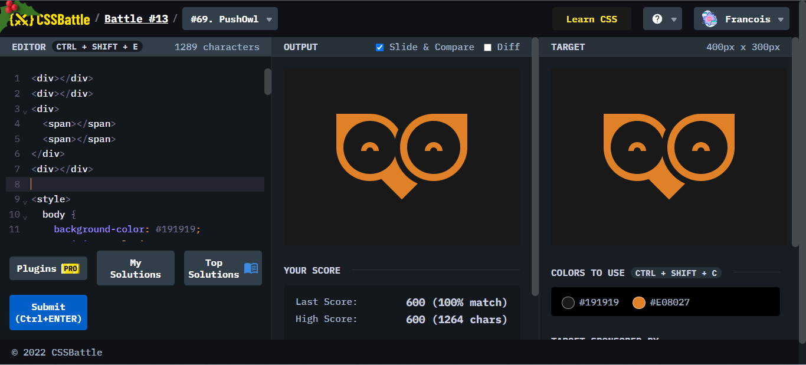
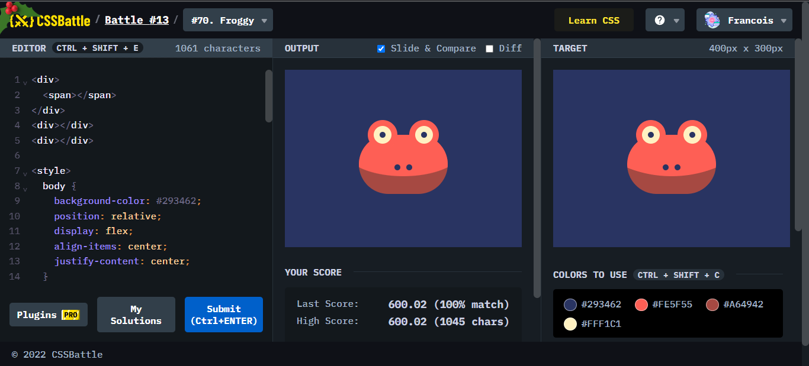
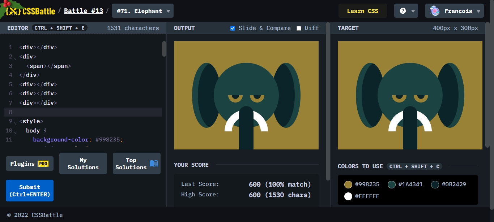
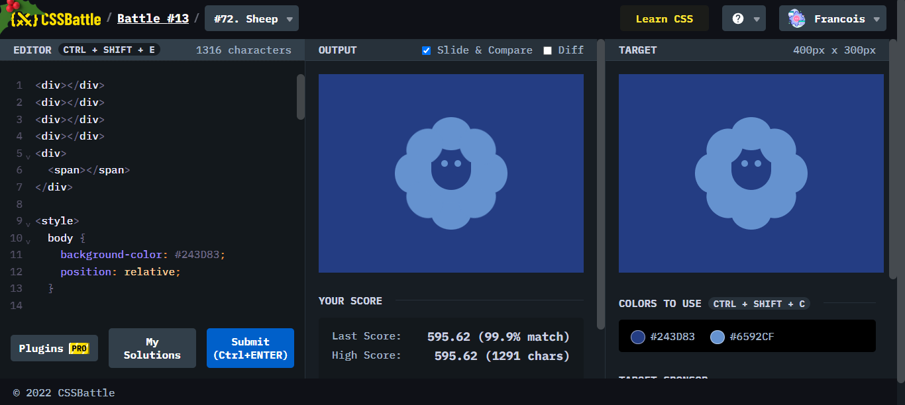
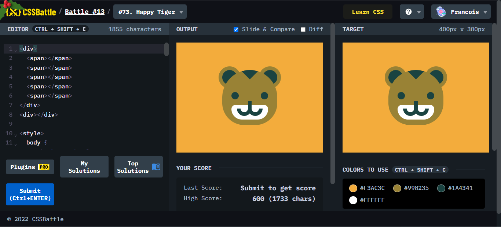
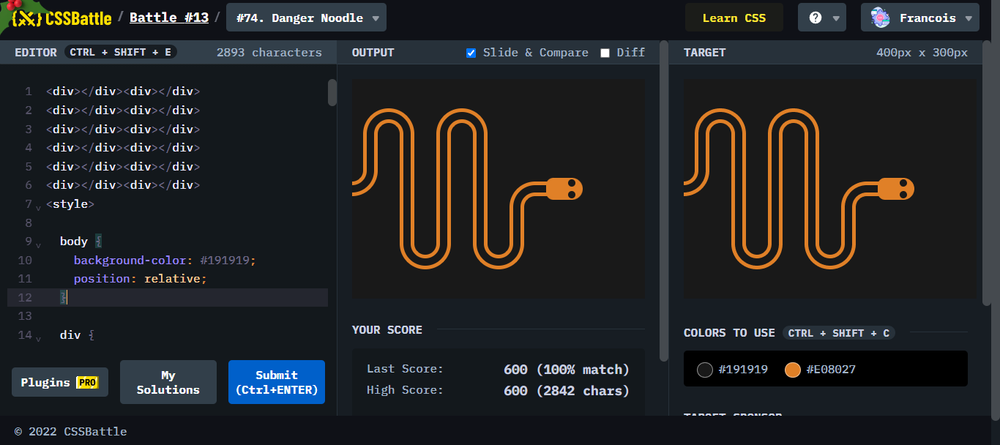
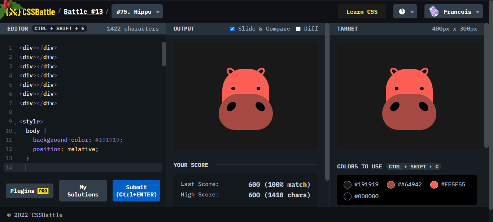
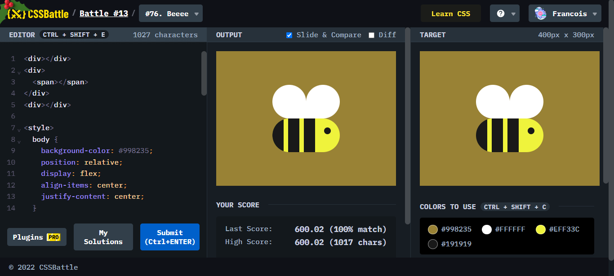

Battle.13では、8問が出題されていて、初見で分かりにくいかつ、動物でそろえてきました。難易度を見てみましょう。

ポイント
フクロウの目の部分の大きさの調節がなかなか合わずに困ったが、0.5px刻みで調節することで解決。

ポイント
このかえるで始めたさっぱりわからなくなった。box-shadowがうまくいかないときは、大きさ設定プラス、borderから作ること、-webkit-box-reflect-で作ったものを反射させて位置づけることを知った。

ポイント
耳のグラデーションをoverflow:hiddenを用いたところを工夫したところ、border出目を作ったところが肝だった。あとはパーツの組み合わせで完了した。

ポイント
-webkit-box-reflectの指定が特に上下に関してはaboveとbelowのため、そこが分かりにくいところが分かった。(左右はleft、rightで私にとって分かりやすい)

ポイント
細かなborder-radiusの調整を行い、今まで使ったtransformや、z-index、overflow:hidden、-webkit-box-reflectといったものを全て導入する。

ポイント
地道に直線と半円を作って組み合わせる。世界の人のトップ層が1000以下で書いていることが信じられない。

ポイント
円のborder-radiusが、かなりいびつで調節することが大変だった。

ポイント
overflow:hiddenを作ってシマシマを表現することがポイント。